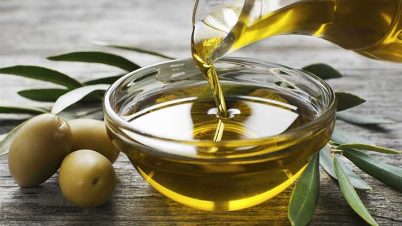

Zeytinyağı
Antik dünyada zeytin yağına “altın” denmesinin bir sebebi var. Bugün bile pek çok kozmetik ürününde kullanılan zeytinyağı cilt ve saç bakımının olmazsa olmazlarından. Saçta ve ciltte yarattığı mucizelerin yanı sıra zeytinyağı, makyaj temizliği için de kullanılabilen doğal yöntemlerden. Zeytinyağı, özellikle göz makyajının temizlenmesinde tercih edilebilir.